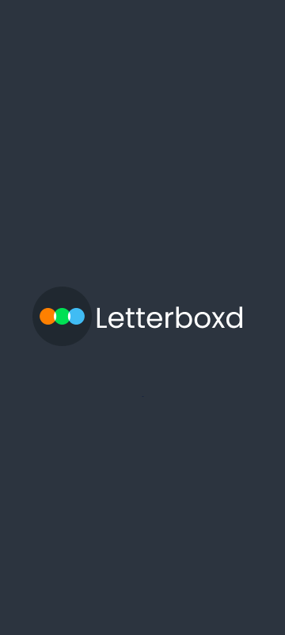

Letterboxd App Concept
UI/UX Redesign Concept
Status: Cleared



Mission Briefing
Proyek ini merupakan sebuah eksplorasi desain ulang (redesign) untuk antarmuka aplikasi Letterboxd. Fokus utama pada desain ini adalah menyegarkan pengalaman pengguna dalam mencari film (discover), membaca ulasan, dan menelusuri aktivitas teman (feed), dengan tetap mempertahankan identitas warna dan nuansa sinematik khas Letterboxd yang gelap dan modern.
Key Features
- Tampilan *Feed* dan penemuan film (*Discover*) yang lebih interaktif dan tertata.
- Desain halaman ulasan (*Reviews*) yang lebih mudah dibaca dan dieksplorasi.
- Profil pengguna yang diperbarui untuk menonjolkan film favorit dan aktivitas sinematik.
Equipped Tools
Figma
UI Redesign
App Concept